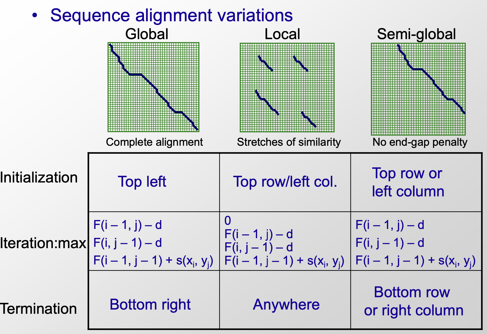

home..
Lecture03 hashing blast database search
zying / December 2022 (399 Words, 3 Minutes)
Lectures
ML_in_genomics
Global alignment vs. Local alignment
Needleman-Wunsch and Smith-Waterman
- Needleman-Wunsch 就是lecture02讲的比对算法（find the longest common sbusequence）
- a type of global alignment
- usually applied in homologous comparison
- less useful for rearrangements, inversion or aligning to reference sequences
- Comparison of global, local and semi-global alignment
- global alignment: end-to-end alignment; local alignment: comparison of substrings from different long strings
- application:
- comparing conserved parts of a gene in small domains
- searching-finding a small gene in a large chromosome
- analyzing rearrangements in large segments
- From computional perspects, global align that starting at (0,0) and ending at Bottom right, but local align that starting at any position and ending anywhere
- semi-global initializing from top row/left column to bottom row/right column
It’s enssential is a type of global alignment that cannot get penalty when exist gaps in the initial or terminal position 
- Smith-Waterman作为local alignment 典型例子在needleman-wunsch的基础上，反复迭代每个位置作为起始位点记分至F=0止
- 也可以通过在对角线周围限定范围降低时间和空间复杂度，但不一定能得到最优结果，实践效果却不错
- Varying gap penalty functions
- Linear gap penalty: w(k)=k*p (每个gap罚相同的p分, 当前index是否有gap）
- Quadratic: w(k)=p+q*rk^2 (考虑gap的长度，由于需要计算长度，增加了复杂度）
- 加入binary value：starting a gap or not (添加第二个已经包含gap的矩阵）
- Length （mod 3) gap penalty for protein-coding regions (考虑编码蛋白的密码子区域）
- 将长度能被3整除的gaps赋予更少的得分（不会导致移码）
- 要求更多的可能性声明
- possible state：starting， mod 1=1,mod 2=2, mod 3=0
Linear-time exact string matching
- Karp-Rabin algrithm and semi-numerical methods
- interpret stings as numbers (fast comparison)
- main:
- compute next based on precious one
- Hashing (mod p) to keep the numbers small
- deal with spurious hits due to hashing collisions (处理变换之后重复的问题）
- Hash functions and randomized algorithms
- 用mod p处理时间复杂度仍然高，减少数字范围优化
- Hashing： 用hashing func mapping keys k in smaller space
- Hashing func examples: x=y->h(x)=h(y) [reproducibility]; $x{\neq}y{\rightarrow}P(h(x)=h(y))=\frac{1}{m}$ [uniform output distrib] (输入字符不同，变换后相同的概率为1/m-均匀分布)
- 存在一个新的问题：Collisions （不同的输入产生了相同的输出）
- dealing with collisions , due to hashing
- verify that a hit correspond to valid match (把所有比对上的序列都重新计算检查一遍）[耗时]
- avoid worst-case behavior of many collisions (Choose random m) [合理]
The BLAST algorithm and inexact matching
- 用mod p处理时间复杂度仍然高，减少数字范围优化
- Sequence Database search
- Given a query seq to find similar old seqs
- query must be very fast for a new sequence
- most sequence will be completely unrelated to query
- BLAST Overview
- receive query
- split query into overlapping words of length W [重要参数]
- find neighborhood words for each word until threshold T [重要参数]
- look in table where words occur: seeds S
- extend seeds S until score drops off under X
- report significance and alignment of each match
- W choosing:
- Sequence length: n
- Identities: t
- W=[n/(n-t+1)]
- Combs and Random projections
Probabilistic foundations of sequence alignment
- receive query
- Mismatch penalties, BLOSUM and PAM matrices
- alignment score represent
- likelihood ratio beteewn two hypotheses
- H1: alignment due to chance (unrelated)
- H2:alignment due to ancestry (related)
- calcu probability
- Pr(x,y|U): P of alignment x,y by model U (unrelated)
- Pr(x,y|R): P of alignment x,y by model R (related)
- Alignment score: likelihood ratio between the two
- P that align not due to chance = P(x,y|R)/P(x,y|U)
- Score=log(P)
- likelihood ratio beteewn two hypotheses
- Key idea of substitution Matrices: trust alignments of related seqences provide information about biologically permissible mutations
- alignment score represent
- Statistical significance of an alignment score
Deterministic linear-time exact string matching
- Key insight: gather more info from each comparison
- Special case （all same and all diff）
- General case
- learn internal redundancy structure of the pattern
- Pattern pre-processing step
- Pre-processing, Z-algorithm, Boyer-More, KMP
- 预处理序列，找出多次重复的pattern-Z-box
- 如果z-box不在query seq, 直接比对，如果query seq上也有，基于P移动比对